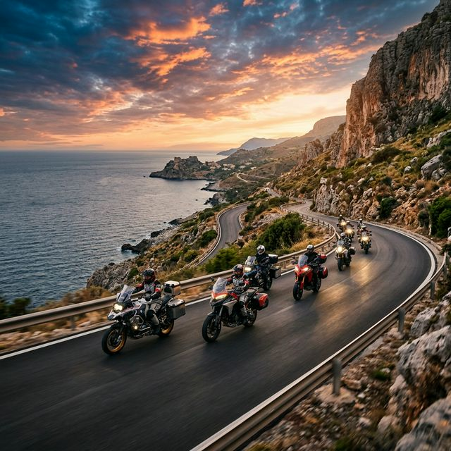
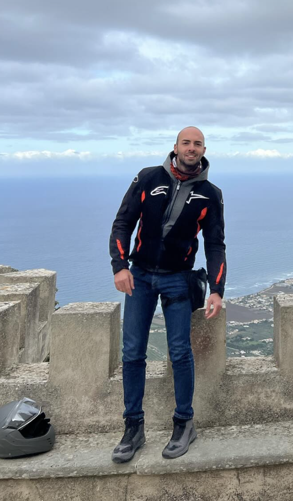
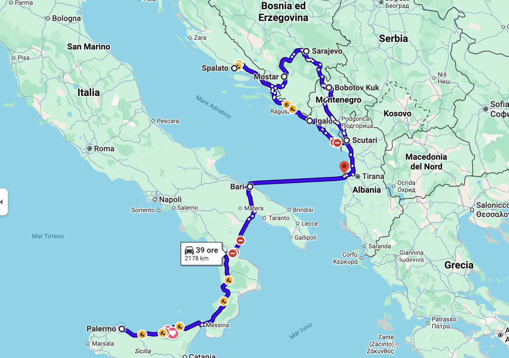
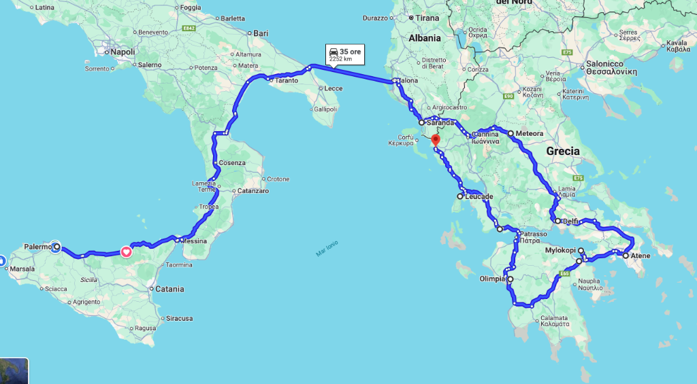
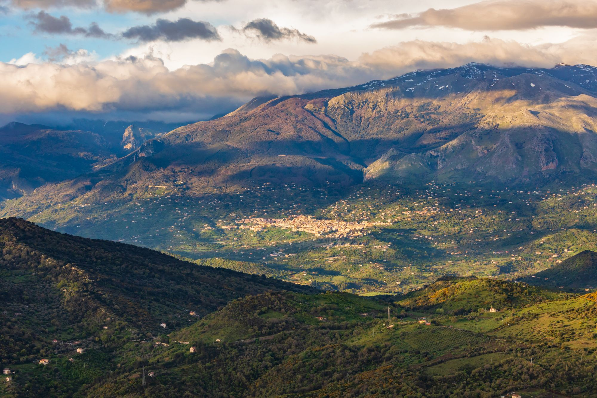
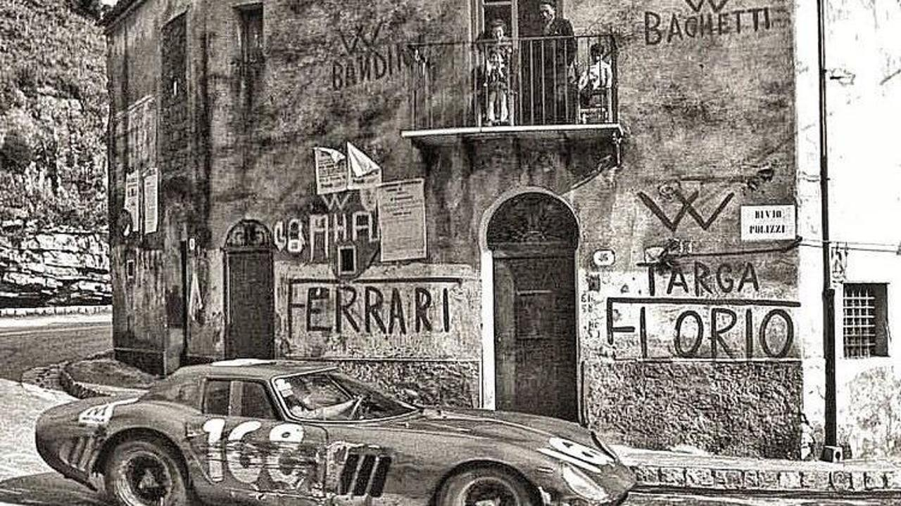

Motoviaggiatori con base a Palermo. Ogni curva è un'avventura, ogni viaggio una storia da raccontare.
The Bruumers — Professional Riders nasce a Palermo dalla passione condivisa per la moto e la voglia di esplorare il mondo su due ruote. Non siamo un club esclusivo: siamo una comunità aperta a tutti.
Che tu sia un rider esperto o un principiante alla prima avventura — qui sei il benvenuto. L'unica cosa che conta è la passione per la strada e la voglia di condividere l'emozione di ogni chilometro.
Il nostro obiettivo? Divertirci in moto, scoprire posti nuovi, assaporare la cucina locale e vivere le tradizioni dei territori che attraversiamo. Dai tornanti delle Madonie alle coste della Grecia, ogni viaggio è un'esperienza che unisce.
Ogni moto, ogni rider, ogni livello di esperienza. Nessuna distinzione, solo passione condivisa.
Ogni tappa è un'occasione per gustare i sapori autentici dei luoghi che visitiamo.
Viaggiare in moto per scoprire le tradizioni locali, i borghi nascosti e la storia d'Italia e oltre.
La moto è libertà. Ogni curva, ogni panorama, ogni risata con gli amici è ciò che ci rende Bruumers.

Presidente — The Bruumers
La moto non è solo un mezzo di trasporto: è uno stile di vita. Ogni viaggio che organizziamo è pensato per creare ricordi indimenticabili, scoprire posti meravigliosi e rafforzare il legame tra tutti noi. In questo gruppo non esistono differenze — siamo tutti uniti dalla stessa passione.
Motociclista appassionato e anima del gruppo, Valeriano ha fondato The Bruumers con una visione chiara: creare una comunità inclusiva dove chiunque possa vivere l'avventura su due ruote. Dalla Sicilia alla Grecia, ha guidato il gruppo in viaggi epici che sono diventati leggenda.
Ogni viaggio è un'avventura unica. Esplora le nostre rotte sulla mappa interattiva e scopri i percorsi che abbiamo attraversato insieme.
Come ogni vero motociclista, collezioniamo gli adesivi dei paesi visitati.

Palermo → Bari → Albania → Montenegro → Croazia → Bosnia
Un'epica avventura attraverso i Balcani. Da Palermo a Bari, poi in traghetto verso Durazzo. Attraverso l'Albania selvaggia fino agli splendidi fiordi del Montenegro, le strade costiere della Croazia, il ponte iconico di Mostar e la storica Sarajevo. Ritorno passando per il Bobotov Kuk e la costa albanese.

Il Grand Tour del Mediterraneo
Un viaggio indimenticabile attraverso il Sud Italia e la Grecia. Da Palermo, risalendo la Calabria, attraversando la Puglia fino all'imbarco per la Grecia. Tappe mozzafiato a Saranda, Meteora, Atene, Olimpia, Delfi, Patrasso e le isole ioniche.

Le curve più belle della Sicilia
Un classico dei Bruumers: il giro delle Madonie partendo da Palermo. Strade panoramiche tra i borghi più belli della Sicilia, con soste gastronomiche tra ricotta fresca e cannoli.

Sulle orme della corsa leggendaria
Il circuito stradale più antico del mondo, percorso in moto fermandosi nei borghi più caratteristici. Da Cerda a Caltavuturo, passando per Collesano e le curve mozzafiato di Piano Battaglia. Storia, adrenalina e panorami indimenticabili.
Segui il nostro profilo Instagram per vedere tutte le foto e i video dei nostri viaggi!
Entra a far parte della famiglia Bruumers! Che tu abbia una sportiva, un'enduro o un cruiser — la tua moto è la benvenuta. Unisciti al nostro gruppo WhatsApp per restare aggiornato sui prossimi giri e conoscere altri rider come te.
Ci troviamo a Palermo e organizziamo uscite regolari — dai giri di una giornata ai viaggi epici di più giorni. Non serve essere piloti professionisti, basta avere la voglia di guidare, esplorare e divertirsi.